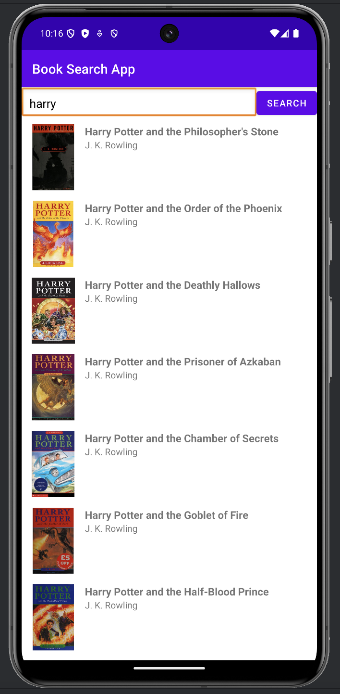
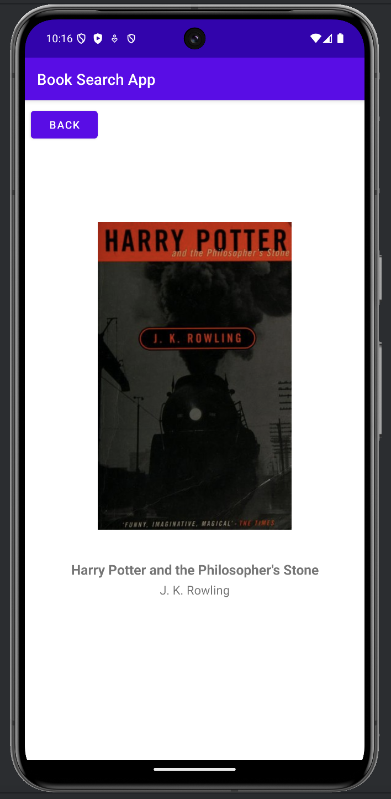

Android app project
Book Search App
This is an Android mobile app project for searching books by title or author. The app connects to the Open Library API, displays matching books in a scrollable list, and lets users open a detail screen for a selected book.

Problem and Objective
The goal of this project was to make book search quick and readable on a mobile device. The objective was to let users enter a book title or author name, retrieve matching results from an external API, and display book titles, authors, and cover images.
Technical Implementation
The app is built in Java using Android Studio. Retrofit is used to send requests to the Open Library API, Gson converts the JSON response into Java objects, RecyclerView displays the list of books, and Glide loads book cover images from Open Library cover URLs.
Challenges and Solutions
One challenge was handling API data that were empty or incomplete, such as books without cover images or search results that return no matches.
The solution was to check the response before displaying it, show messages for empty or failed searches, and use a placeholder image when a book cover is missing.
Results and Impact
The app successfully supports searching for books, viewing results in a RecyclerView, loading cover images, and opening a detail page for a selected book.
This project helped me practice Android app development, API requests, JSON parsing, and moving data between activities.
Project Screenshots
These screenshots show the main search results screen and the book detail screen.
Search Results Screen

Book Detail Screen

Code Snippet
This snippet shows the main API request. It sends the search query to the Open Library API, checks the response, displays matching books in the RecyclerView, and opens the detail screen when a user taps a book.
private void searchBooks(String query) {
progressBar.setVisibility(View.VISIBLE);
RetrofitClient.getApiService().searchBooks(query).enqueue(new Callback<BookResponse>() {
@Override
public void onResponse(@NonNull Call<BookResponse> call,
@NonNull Response<BookResponse> response) {
progressBar.setVisibility(View.GONE);
if (response.isSuccessful() && response.body() != null) {
List<Book> books = response.body().getItems();
if (books != null && !books.isEmpty()) {
adapter = new BookAdapter(books, book -> {
Intent intent = new Intent(MainActivity.this, DetailActivity.class);
intent.putExtra("book", book);
startActivity(intent);
});
recyclerView.setAdapter(adapter);
} else {
Toast.makeText(MainActivity.this, "No results", Toast.LENGTH_SHORT).show();
}
} else {
Toast.makeText(MainActivity.this, "Failed to load results", Toast.LENGTH_SHORT).show();
}
}
@Override
public void onFailure(@NonNull Call<BookResponse> call, @NonNull Throwable t) {
progressBar.setVisibility(View.GONE);
Toast.makeText(MainActivity.this, "Error: " + t.getMessage(), Toast.LENGTH_LONG).show();
}
});
}Future Enhancements
Future improvements include adding saved or favorite books, improving the visual design, and adding more book details.